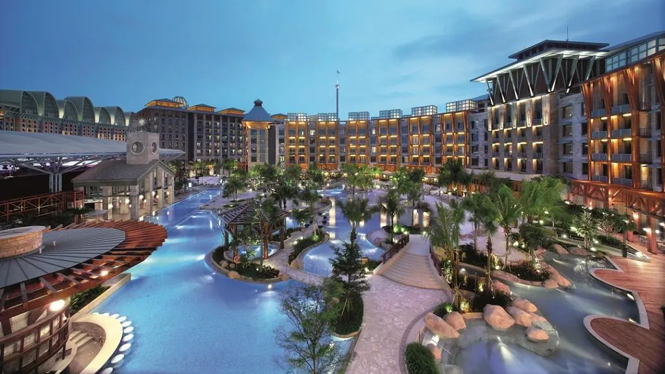
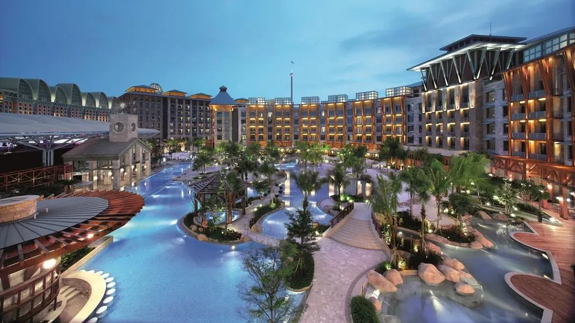

VhoTel is a legendary hotel in Jakarta open since 1999 providing impeccable service for its guests. VhoTel is the perfect place for a rejuvenating, opulent getaway, private gatherings, and well-organised events and meetings. Our philosophy is about guest comfort and care. VhoTel strives to create a relaxing setting and guest experience by offering a tranquil ambience, continuously updated facilities and dedicated services delivered with a smile and sincerity that is always in tune with the properties' local environment.